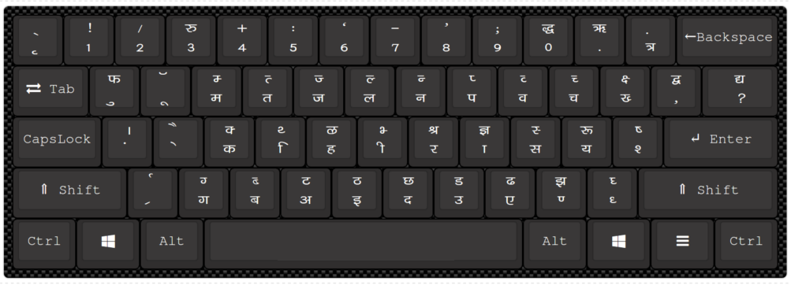
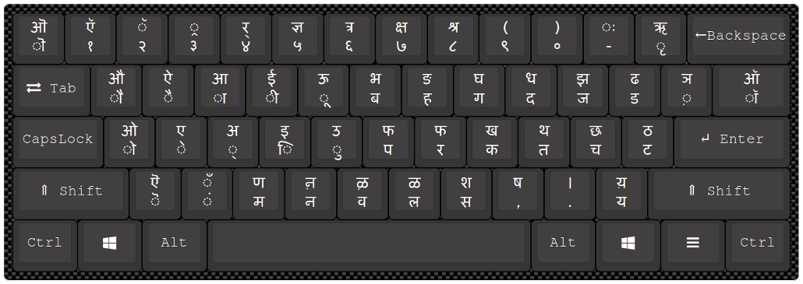

Typing is the process of inputting text into a computer or other device using a keyboard or other input
method.
There are many types of typing, each with its own keyboard layout and script or character set.
Types of Typing
1. English Typing:
Uses the Latin script alphabet and is used to write in the English language.
The keyboard layout typically includes the QWERTY layout

2. Hindi Typing:
Uses the Devanagari script alphabet and is used to write in the Hindi
language.
The keyboard layout typically includes the Mangal or KrutiDev font.
1. Hindi Typing Keyboard: Remington
2. Inscript (Indian Script) Hindi Keyboard

3. Arabic Typing:
Uses the Arabic script alphabet and is used to write in the Arabic language.
The keyboard layout typically includes the Arabic characters.
4. Chinese Typing
Uses Chinese characters and is used to write in the Chinese language.
The keyboard layout typically includes a Chinese character set.
5. Japanese Typing
Uses Japanese characters and is used to write in the Japanese language.
The keyboard layout typically includes a Japanese character set.
Conclusion:
There are many types of typing, each with its own unique keyboard layout and script
or character set.
Learning to type in different languages and scripts can be a valuable skill for communication and computer use.
About Google Input tool:
Google Input Tools is a language input software developed by Google that enables typing in over 90 languages using different input methods such as transliteration and virtual keyboards.